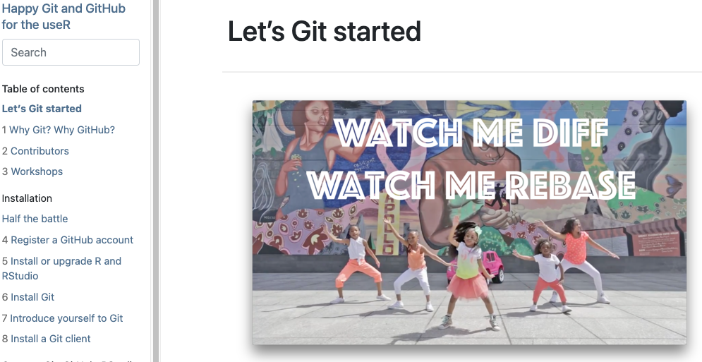

Git and GitHub 
MATH/COSC 3570 Introduction to Data Science
Git and GitHub
- Git is a version control system – like Track Changes features from MS Word, on steroids.
- It’s not the only version control system, but it’s a very popular one.

- GitHub is a home for Git-based projects (repository, or repo) on the cloud – like Dropbox but much better.
- We’ll use GitHub as a platform for web hosting homework.
Versioning

Versioning with human readable messages
- Informative messages: let the next person know what happened with each change.

Why Need Version Control

Personal Access Token (PAT): Step 3

Resources
